Systeem Profiel
Mijn naam is Vince Bahri. Als software engineer in opleiding fascineert het me hoe complexe systemen achter de schermen feilloos met elkaar communiceren—en hoe we die systemen optimaal kunnen beveiligen en testen.
Naast het schrijven van schone, stabiele code ben ik sterk analytisch ingesteld en floreer ik in omgevingen waar snel geschakeld moet worden om technische verstoringen op te lossen. Mijn expertise ligt op het snijvlak van applicatiebeveiliging en procesoptimalisatie.
// 01 - Persoonlijke Interesses
Wanneer ik niet achter een scherm zit te programmeren, houd ik me graag bezig met een mix van creatieve en ontspannende bezigheden.
Gaming
Favoriet: War Thunder. Strategisch en tactisch spel spreekt me het meest aan.
Films, Series & Anime
Als introverte persoon breng ik graag tijd door met kijken, in plaats van drukke sociale settings.
Video Editing
Ik bewerk graag video's, van het knippen tot kleurcorrectie en montage.
Hardware & PC's
Ik bouw en onderhoud mijn eigen pc-systemen en volg nieuwe hardware-ontwikkelingen op de voet.
// 02 - Systeem Educatie Progressie Tijdlijn
Gewoon Lagere Onderwijs (GLO)
Alexander A. Sweet School
Het leggen van de fundamentele basis voor mijn schoolcarrière. Tijdens deze periode ontwikkelde ik mijn vroege nieuwsgierigheid en deed ik essentiële basiskennis en vaardigheden op in kernvakken zoals rekenen, hoofdrekenen, en algemene taalkennis.
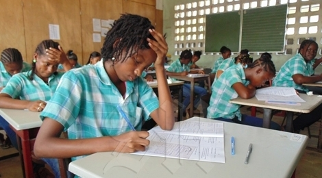
Meer Uitgebreid Lager Onderwijs (MULO)
Mulo Botromankiweg
Verdieping van de algemene theoretische kennis en de eerste stappen richting een profielkeuze. Hier ontwikkelde ik een sterke interesse in exacte vakken en analytisch denken, wat de basis legde voor mijn verdere doorstroom en uiteindelijk gekozen voor de richting B.
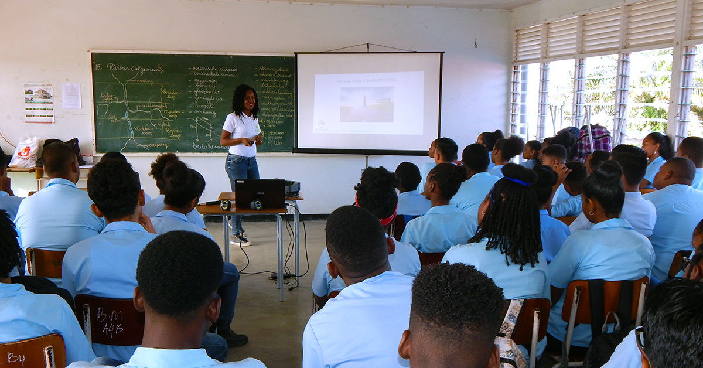
Hoger Algemeen Voortgezet Onderwijs (HAVO)
Scholen Gemeenschap Sanatan Dharm (SGS)
Succesvol afgerond met een focus op analytische en maatschappelijke vakken. Naast mijn studie zette ik hier mijn eerste stappen op de arbeidsmarkt, wat mij hielp om vroege discipline, timemanagement en een sterke werkethiek te ontwikkelen en afgestuurd met de talen pakket P1.
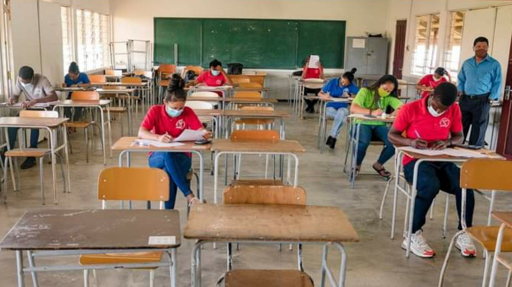
Hoger Beroepsonderwijs (HBO) Software Engineering
University of Applied Sciences and Technology (UNASAT)
n 2020 begon ik vol enthousiasme aan de opleiding HBO Software Engineering bij UNASAT. Vanwege de COVID-19-pandemie verliep het onderwijs in deze periode volledig online, wat veel vroeg van mijn zelfstandigheid, discipline en aanpassingsvermogen. Helaas dwongen onvoorziene financiële omstandigheden mij om de studie destijds tijdelijk stop te zetten. Hoewel dit een moeilijke beslissing was, heeft het mijn passie voor de IT nooit verminderd. Deze periode heeft mijn motivatie juist gesterkt om later met hernieuwde energie, volwassenheid en een nog grotere drive terug te keren naar mijn droom om software engineer te worden.
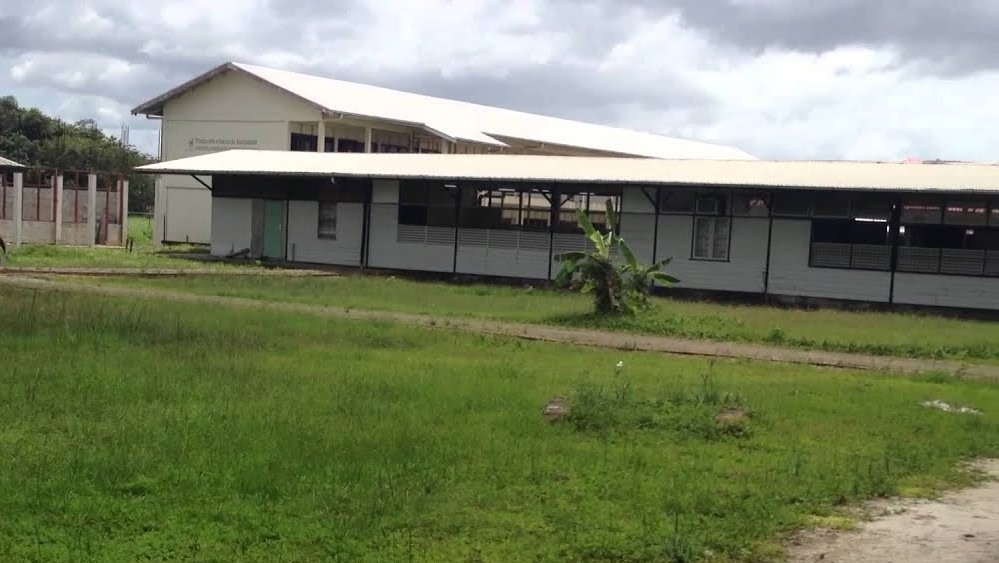
Hoger Beroepsonderwijs (HBO) Software Engineering
University of Applied Sciences and Technology (UNASAT)
Na een onderbreking van vier jaar, waarin ik waardevolle werkervaring heb opgedaan en mezelf op persoonlijk vlak heb ontwikkeld, ben ik in 2025 met een ijzersterke focus teruggekeerd naar UNASAT. Mijn absolute prioriteit en doel is nu om de opleiding HBO Software Engineering succesvol af te ronden. Met hernieuwde motivatie, meer levenservaring en een nog grotere passie voor technologie stort ik me momenteel vol overgave op complexe vakken zoals software security, testing en full-stack development. Deze terugkeer markeert voor mij de ultieme stap naar een succesvolle carrière als software engineer.
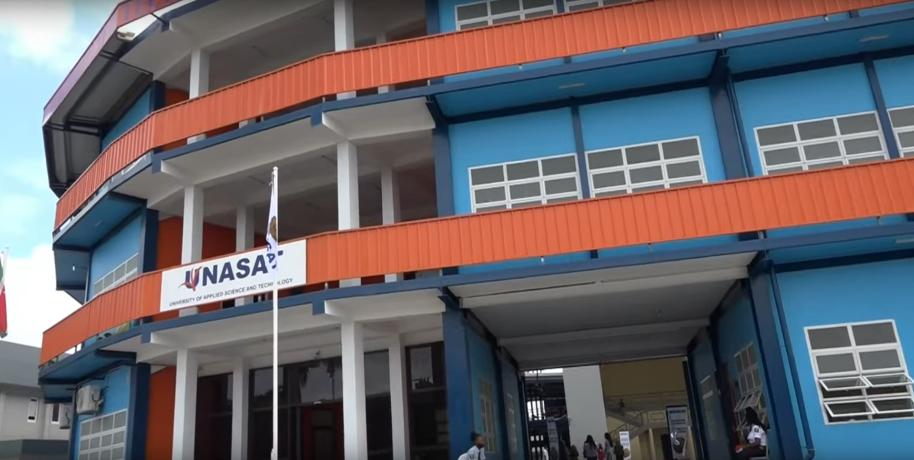
// 03 - Systeem Werk-Ervaring Progressie Tijdlijn
Winkel helper
Mastana supermakt
Dit was mijn eerste kennismaking met een gestructureerde werkomgeving met vaste werktijden en shifturen, die ik destijds combineerde met mijn studie aan de HAVO (SGS). Als allround winkelhelper bij Mastana Supermarkt bood ik brede ondersteuning op de winkelvloer. Mijn taken varieerden van het herbevoorraden van de schappen en koelingen tot fysiek zwaar werk, zoals het laden en lossen van goederen en het tillen van gasbommen.
Mijn belangrijkste verantwoordelijkheid lag echter bij de klantenservice, waarbij ik klanten hielp met het zorgvuldig inpakken van hun boodschappen in dozen of zakken en hen begeleidde in de winkel. Deze eerste baan heeft mij de basis van professionele werkdiscipline bijgebracht. Ik heb hier geleerd hoe belangrijk punctualiteit en betrouwbaarheid zijn binnen een team, en hoe je door hard te werken en een klantvriendelijke instelling direct bijdraagt aan een fijne klantervaring.
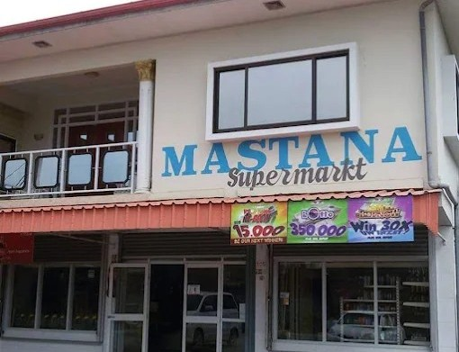
Bode
Ramon's car center
Als administratief koerier en loper bij Ramon's Car Center was ik verantwoordelijk voor kritieke logistieke en formele taken. Mijn werkzaamheden bestonden uit het snel en discreet bezorgen van belangrijke documenten aan bankfilialen en sleutelrelaties van het bedrijf.
Mijn hoofdtaak was echter het succesvol beheren van het volledige overdrachtsproces van verkochte voertuigen op naam van de nieuwe eigenaren. Dit was een nauwkeurig proces waarbij ik vaste procedures moest doorlopen bij het CBB en diverse verzekeringsmaatschappijen, om de overdracht vervolgens officieel te finaliseren bij Politiepost Geyersvlijt en de bijbehorende nummerplaten op te halen bij de haven. Door deze dynamische functie heb ik niet alleen een uitstekende geografische kennis van het wegennet en de verkeersstromen in Paramaribo opgebouwd, maar heb ik ook geleerd hoe cruciaal punctualiteit, een strakke planning en nauwkeurigheid zijn bij het werken met officiële overheids- en bankdocumenten.
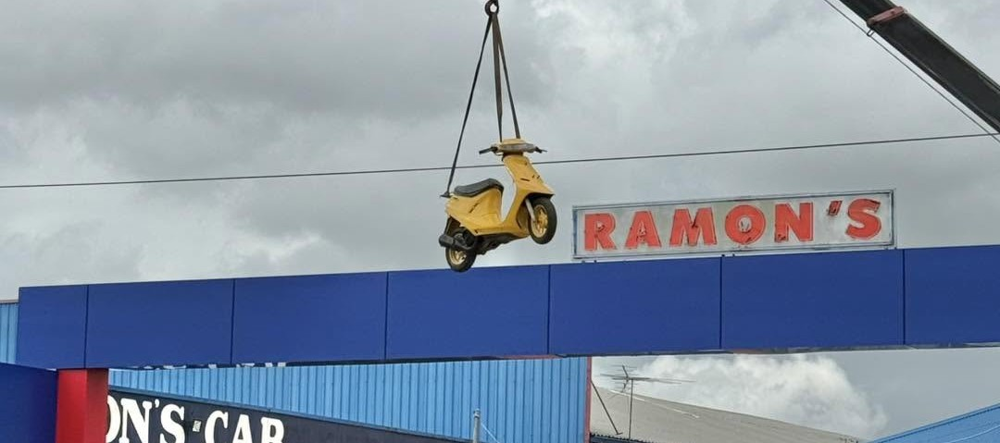
Pompbediende
Sol Pitstop Livorno - Shell Maagdenstraat
Hoewel ik mijn werkzaamheden begon bij Sol Pitstop Livorno, bleek ik al snel een flexibele kracht die overal inzetbaar was. Vanwege personeelstekorten op de zwaardere locaties maakte ik de overstap naar het drukke Shell-station aan de Maagdenstraat in het centrum van Paramaribo. Hier was ik verantwoordelijk voor de directe bediening aan de tank pompen en het verlenen van extra service, zoals het reinigen van ruiten en assistentie bij het oppompen van banden. In deze hectische omgeving, gekenmerkt door een constante stroom van stadsbussen en taxichauffeurs, heb ik geleerd om onder hoge druk kalm en stressbestendig te blijven handelen.
Daarnaast droeg ik grote verantwoordelijkheid voor het direct beheren en afrekenen van aanzienlijke hoeveelheden contant geld op het voorterrein. Na mijn shifts ondersteunde ik actief bij het herbevoorraden van de winkelschappen en koelingen. Deze ervaring heeft mijn flexibiliteit, verantwoordelijkheidsgevoel, multitasking-vaardigheden en het vermogen om in een dynamische en chaotische omgeving het overzicht te bewaren, enorm versterkt.
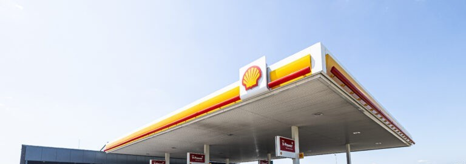
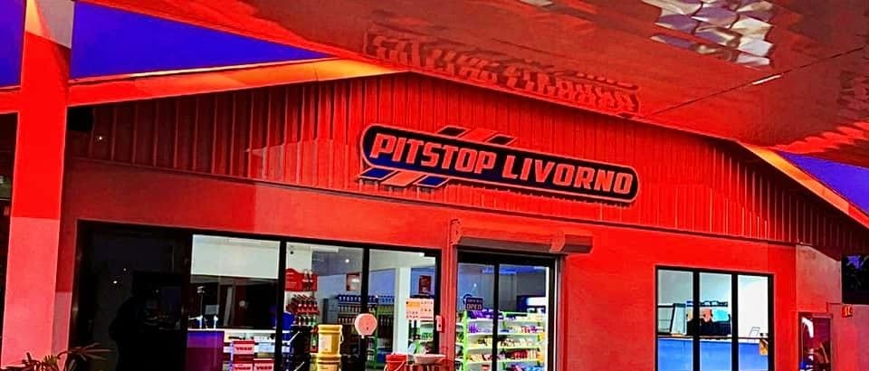
Sales Representative
Rakesh Mobile & Giftshop & Hotel Panorama
In deze veelzijdige rol lag mijn focus voornamelijk op de verkoop van mobiele telefoons, aangevuld met consumentenelektronica, parfums en horloges. Omdat de klantenkring en hotelgasten voor wel 90% uit Braziliaanse Portugeessprekenden bestond, heb ik mijzelf de basis van de Portugese taal eigen gemaakt om hen optimaal te kunnen verwelkomen en adviseren.
Naast de verkoop was ik verantwoordelijk voor technische troubleshooting en een sterke after-sales service bij defecten of vragen. Deze ervaring heeft mij geleerd hoe belangrijk cultuursensitiviteit en flexibiliteit zijn in de communicatie. Ik heb geleerd om snel te schakelen in een meertalige omgeving en complexe technische problemen op een rustige, klantvriendelijke manier op te lossen, wat mijn probleemoplossend vermogen en talenkennis enorm heeft verrijk.
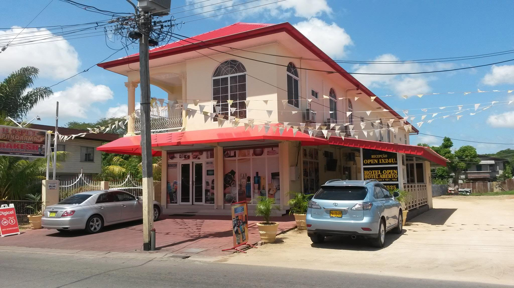
IT Servicedesk
Webhelp - Concentrix
Als IT Servicedesk medewerker bij Webhelp - Concentrix ben ik verantwoordelijk voor het leveren van eerste- en tweedelijns IT-support, waarbij ik dagelijks hardware en softwareproblemen van agents diagnosticeer en oplos om downtime tot een minimum te beperken. Daarnaast houd ik me actief bezig met werkplekbeheer en het configureren van technische apparatuur. Een belangrijk onderdeel van mijn functie is het realiseren van hardware rollouts, waarbij ik volledige technische werkplekken opzet voor nieuwe projecten zoals Ayvens LeasePlan. Ook bij acute, operationele storingen binnen kritieke projecten zoals het incident binnen het project Nederlandse Spoorwegen schakel ik snel om systemen succesvol te herstellen.
Door deze ervaring heb ik mijn probleemoplossend vermogen sterk ontwikkeld. Ik ben in staat om snel de kern van een technisch probleem te achterhalen door logisch storingen uit te sluiten. Ik heb geleerd om onder hoge druk stressbestendig te handelen en prioriteiten te stellen tijdens bedrijfskritieke situaties om de continuïteit te waarborgen. Bovendien bezit ik sterke communicatieve vaardigheden, waardoor ik complexe technische kwesties helder en begrijpelijk kan overbrengen aan niet-technische collega's om hen efficiënt weer op weg te helpen.
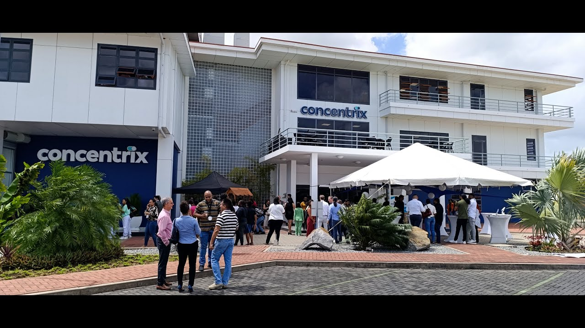